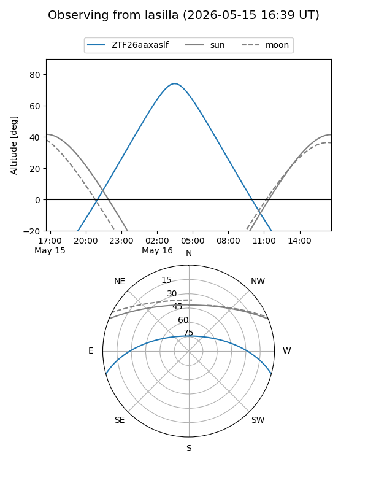
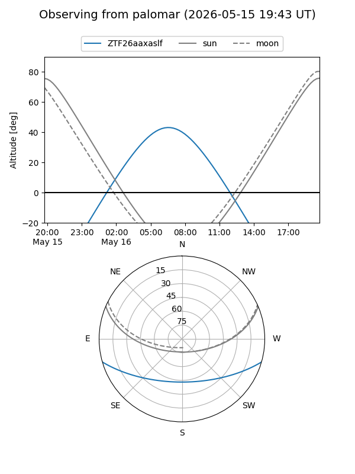

ZTF26aaxaslf
Target ZTF26aaxaslf at 2026-05-16 07:24
Aliases and brokers:
FINK: link
Lasair: link
ALeRCE: link
alt names
ZTF26aaxaslf (ztf,fink_ztf)
Coordinates:
equatorial (ra, dec) = 214.9775,-13.35112
equatorial (HMS+DMS) = 14:19:54.60,-13:21:04.03
galactic (l, b) = (333.6507,+44.18007)
Flags:
Photometry:
last ztfg=19.51
1 ztfg detections
Lightcurve
Visibility


Additional plots